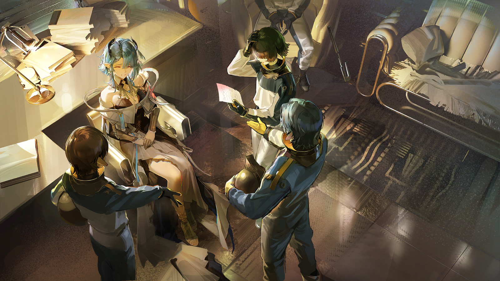

工头
听到锤子和锯床的声音了吗？各位，你们有多久没在伊比利亚见过造船厂了？
工头
修船、制帆、测风向、画海图……哪怕你毫无经验，也可以从头学起。
工头
岛民们也无需担心，打捞中心和船厂平等地向所有人敞开大门，人人都有机会为两周后港都中心城区的打捞出力！

阴沉的路人
港都……黄金时代的都城……它在经典中被批判为罪孽滋生的源头之一。
阴沉的路人
岛民同样不可被信任，他们是引来大静谧的元凶的后代，他们是不祥之征……

洒脱的路人
别再重复教士们的教诲了，萨尔瓦多，赶路的两个月来它可没为我们带来一顿饱饭——但船厂的工作可以。
萨尔瓦多
既然如此，为什么还有那么多人跟我们一样站在远处观望？
洒脱的路人
嗐，大家都是从偏僻的捕鳞村来的，哪里见过这样的阵仗？
洒脱的路人
城区里岛民随处可见，惩戒军却很少盘问他们；人们打招呼的方式不是引用经文，而是直接问对方饭有没有吃饱。
洒脱的路人
老实说我也不知道打捞港都到底对我们有什么意义，但如果这里的生活更好，我愿意暂时违背经典里的几条教诲。
萨尔瓦多
圣徒在上，他要是看到了这般混乱的景象会怎么想，到时候我们就需要在审判庭的地牢里忏悔了……
洒脱的路人
我不知道圣徒阁下会怎么想，但我知道至少在这里，审判庭不再像原来那样严苛了。
萨尔瓦多
……怎么证明？
洒脱的路人
喏，你看那边——连那个跟黄金时代的雕像勾肩搭背的小姑娘都没被押进地牢里，我们还怕什么？

特菲
咳咳，在万众瞩目的启动仪式上，正是这首由我指挥、由我领唱的船歌，见证了国王的雕像被打捞上岸。
特菲
你们是否好奇，一个名不见经传的年轻人，怎么会唱伊比利亚百年前的船歌？怎么会穿着完全不合身的海军制服？
特菲
又怎么会有那么大的胆子，跟审判庭专设的招工处分庭抗礼，堂而皇之地在刚举办过启动仪式的广场上演讲？
特菲
哦，你们或许有人会说，自从圣徒卡门阁下向全伊比利亚宣布打捞港都的计划之后，审判庭信守的教义不同以往。
特菲
可怜的人，我看到你们中的好几个人露出了赞同或迷茫的表情……不过他们的宽容，显然不是我“胆大妄为”的原因。
特菲
喏，看到我身边的这位先生了吗？有谁知道他的名讳？
特菲
这一位，曾经的伊比利亚王室海军上将，埃斯特班·恩里克斯·德·托莱多，与我关系匪浅……
特菲
啊，你们想必已经猜到了，毕竟我与他的着装和长相如此相像！
特菲
骨相、脸型、耳羽的位置，甚至发质……还有我身上的王室海军制服，都是他给我留下的证据！
特菲
两周之后，雷亚-伊比利亚即将归来，你们难道不会好奇，那座曾经属于王室的都城会回到谁的手里？
瓦列里奥
小心一点，审判庭的人看过来了……
特菲
放心，德·托莱多家族赞赏审判庭为伊比利亚付出的一切。我只是想拿回埋葬在港都中心城区中的，属于家族的遗产和宝藏。
特菲
追随我，埃斯特菲尼娅·科隆·德·托莱多，伊比利亚王室海军的继承者。只要一点小小的资助……
特菲
啊不对——只要你们拥护我，我也将庇佑你们，无谓出身！

南多
前天盘查的时候她还说自己是乐队的小号手，怎么又成伊比利亚王室海军的继承者了？这么明显的谎话竟然还有人在认真听？

德鲁莎
（打哈欠）不准动手。

南多
我知道现在审判庭的行动方针很谨慎，但您真的不觉得这个“德·托莱多”很可疑吗？
南多
如果我的观察没错，她的身份一定有问题，甚至可能根本没有获得居住资格。
南多
她费尽心机混进来，万一是要对打捞工程不利……德鲁莎教官，我申请拘捕她！

德鲁莎
驳回。
南多
我——

德鲁莎
别太依赖直觉，南多。
南多
我知道您想让我找证据……
德鲁莎
从你开始怀疑的那刻起，哪怕没有证据，也要先去发掘规律。

南多
规律？
德鲁莎
没错。比如一个月前，打捞中心建成之后，城中发生了十多起前天那样的破坏事件。
德鲁莎
它们之间似乎毫无关联，但要是你在岗哨值班的时候，用打捞中心技术工的签到日志画画解闷，就会发现一些意想不到的线索。

南多
画……画画？

德鲁莎
这不是重点。重点是虽然我们前天遇到的那个技术工与破坏事件无关，但有几个特定的技术工……
德鲁莎
他们进行水下作业的日期与破坏事件发生的日期是完全重合的。
德鲁莎
或许这也能解释为什么近来深海教徒犯案次数逐渐减少，他们不是没有帮手，只是帮手的身份变了。

南多
您怀疑这些破坏事件与打捞中心的岛民有关？那……
德鲁莎
我们只是巡逻组的成员。目前我们没有实证也没有搜查权，不要给自己惹麻烦。
南多
（紧盯特菲）

德鲁莎
唉，什么都没听进去，比驮兽还倔。至少等我走了再动手吧，别给我添麻烦。

干练的技术工
站住，纳乔！怎么又来观测厅？我可检查过了，今天没有你的排班。

纳乔
阿奎拉……
阿奎拉
我说过多少遍了，哪怕你一天不吃不喝全泡在水下连接供能端口，甚至因公殉职，伊比利亚人也不会感激你。
纳乔
我担任水下作业组的技术负责人不是为了让他们感激我。

阿奎拉
“我是不想让他们对岛民的误解再加深”……行了行了，你刚刚是不是又下水了？

纳乔
嗯……嘶。

阿奎拉
手臂上的锈斑已经蔓延到肩上的神经接口，还有——

阿奎拉
关节处的螺栓怎么丢了？那是鲁菲纳奶奶留给你的过去的老型号，根本找不到替换件！
阿奎拉
前天不是才帮你拿了防水涂料和生物阻隔剂吗？不对，前天……
纳乔
前天结束任务后你直接去参加岛民互助会了，阿奎拉。
阿奎拉
抱歉。下次跟我一起去吧，还能提醒我一下。

纳乔
那儿的氛围我不太适应。
阿奎拉
怎么，打破你对伊比利亚的美好向往了？
纳乔
阿奎拉，这里已经足够好了。
阿奎拉
还不够。能自由地选择工作，能不用每天被惩戒军盘问，这些在伊比利亚人眼中是日常，但对我们而言却是一种殊荣？荒谬！
阿奎拉
而且你知道，鲁菲纳奶奶想要的也绝不只是这样。
纳乔
……
纳乔
至少他们安排了一名阿戈尔人来担任打捞中心的新监事。

阿奎拉
无济于事。一个阿戈尔的前执政官不能也不会对伊比利亚的同胞上心。
纳乔
你不打算参加她的欢迎会吗？
阿奎拉
我宁愿去互助会，与我真正的同胞在一起。

纳乔
……

清晰的女声
海洋。
清晰的女声
混合层不算太深，这里的海水总是温暖、明亮。微小的浮游生物像空气中的灰尘，恣意游动。
清晰的女声
海床。
清晰的女声
大海的土壤，也是雷亚-伊比利亚沉睡的地方。
清晰的女声
它也连接着大陆架上的每一座岛屿，如果你有兴趣，可以漫步海底，走过每一座失落的城镇。
紧张的潜水员
呼——呼——
清晰的女声
放轻松，莫雷诺。这身潜水服相当于让你拥有了鳞兽的鳔，别害怕水流，借它们的力浮起来。
紧张的潜水员
我、我明白了，克莱门莎监事。原本我只是想来参加您的欢迎会，现在却在伊比利亚南部海岸的水下漫步……
克莱门莎
就当是我独特的欢迎方式吧。
克莱门莎
阿戈尔与伊比利亚都是依海而生的国度。“岛屿”“波浪”“海床”……我们有许多共通的、关于大海的词语。
克莱门莎
这片流动的蓝色环带本身并不可怕。或许有一天，你们不用再借助阿戈尔的全息影像，而是能在真正的、没有界限的海底漫步。
紧张的潜水员
难以置信，我能感受到脸上模糊的阳光，脚下粗糙的贝壳碎屑，还有海流在推动我的后背……
克莱门莎
啊，不好意思，推你的是负责投影的小帮手。它似乎想提醒你，想要体验的技术工还有很多。
紧张的潜水员
抱、抱歉。
紧张的潜水员
这是哪里？奇妙的建筑，还有很多穿白袍的阿戈尔人……他们是在空中游动？
克莱门莎
抱歉，环境模拟出了一点差错。小帮手，重新校准数据。

紧张的潜水员
克莱门莎监事，刚刚我看到的就是阿戈尔？

克莱门莎
是阿戈尔的海底城市，弥利亚留姆，也是我曾经执政、生活的地方，我的家。
克莱门莎
离开它之前，我请了两天假，一天用来温习伊比利亚语，检修体内的语言模块，一天用来记住这座城市。
克莱门莎
你看到的，是根据我的记忆复现的场景。
紧张的潜水员
我甚至都不知道该不该叫它城市，它和我待过的所有地方都太不一样了……阿戈尔和我们，到底还是离得太远……
紧张的潜水员
克莱门莎监事，您可以告诉我，在阿戈尔语中“阿戈尔人”是怎么说的吗？我、我想——
克莱门莎
你是想知道，除了“岛民”之外，你是否还拥有另一个称呼，对吗？
紧张的潜水员
您怎么知道……

克莱门莎
（阿戈尔语）阿戈尔人。

克莱门莎
请记好，你与我在阿戈尔的语汇中，都以“阿戈尔人”指称。
紧张的潜水员
阿……戈……
紧张的潜水员
（发音生涩的阿戈尔语）“阿戈尔人”……
语言模块
检测到无法识别的词语，请使用者再次向说话者确认。

克莱门莎
……

克莱门莎知道她对面的同胞听不到语言模块的语音提示，也只有她自己能看到浮在空中的警告弹窗。
他们的祖辈离开海洋来到伊比利亚生活，或许从他们的父辈开始，阿戈尔语就已经消失在记忆之中。
克莱门莎的亲切帮助他们打开了脑海深处未曾触碰的部分。
“大海”“游动”“阿戈尔”“阿戈尔人”……
他们生涩的阿戈尔语，令克莱门莎的语言模块频频报错，弹窗几乎遮住了克莱门莎看向同胞们的视线。
上岸之前她已经做好了准备。她知道身为打捞计划的提出者，阿戈尔的代表，她无法插手伊比利亚的政策。
可她还是想接触这群在岸上生活的同胞，想为他们做些什么。
至少现在，她不想打断这群离家太久太久的同胞，他们有权重新拾回家乡的语言。但显然，并非所有同胞都能领受克莱门莎的好意。
警惕的岛民
好了，都别再问了！
警惕的岛民
阿戈尔语离我们太远，学它有什么用？在审判庭盘问我们的时候，为自己加一条可疑的罪状吗？
克莱门莎
先生，不要责怪你的朋友。若你不满意，可以直接指责我。
警惕的岛民
克莱门莎监事，我明白您没有恶意。
警惕的岛民
可在伊比利亚，尤其是对岛民而言，亲近海洋是危险的。我们面临的威胁不是靠浪漫的、诗意的词汇就能消除的。
警惕的岛民
如果我们需要，我们会向同样经历过伊比利亚摧残的同胞求助。至少在互助会里，我不会对自己的身份感到怀疑。
克莱门莎
互助会……
？？？
（阿戈尔语）“阿戈尔人”。
语言模块
识别到词语，已校准模块，清除报错提示。
克莱门莎
嗯？
？？？
如果一句标准的阿戈尔语就会让人罪加一等，那我早该待在地牢里了。

警惕的岛民
纳乔？
纳乔
阿戈尔语和伊比利亚语虽然发音很不一样，但只要找到方法，学会一个词也不是太难。
纳乔
无论是“岛民”还是“阿戈尔人”，都是称呼我们的方法。多了解一种，就能多了解“我们”一点，不是吗？
纳乔
盖乌斯，下午的水下作业我替你去吧？安赫拉昨天就在催你回家了。
警惕的岛民
……她身体不好，我回去看看她。
纳乔
抱歉，克莱门莎监事。
纳乔
他们只是最近负担太重，等真的用上阿戈尔制造的装备，水下作业的压力减轻了，他们就不会这样咄咄逼人了。
克莱门莎
减轻他们的负担是我的工作，审判他们可不是。无需多虑。还有，谢谢你替我解围，纳乔。
纳乔
您太客气了。
克莱门莎
你是水下作业组的对吗？我听说在审判庭最初接管打捞中心的时候，他们欠缺经验，你帮了他们很多。
克莱门莎
有时间的话向我介绍一下你的朋友们吧，我了解阿戈尔的技术，也想了解使用技术的人。

纳乔
十分乐意。

阿奎拉
索莱达，你来了。上周你说迁居到城区之后，和伊比利亚人有不少摩擦，现在情况好转了吗？
欣慰的岛民
好了不少。我听从了导师和各位同胞的建议，保留了邻居蓄意伤害我的证据。
欣慰的岛民
之后，我找岗哨的审判官和惩戒军倾诉，说邻居的行为已经影响到了我打捞工作的进度。
欣慰的岛民
我不知道他们有没有做什么，但那几个邻居确实稍微安分了几天。
阿奎拉
只是权宜之策。如果你需要帮助，哪怕是宵禁之后，只要点亮我们的信号，就一定会有同胞帮你。
欣慰的岛民
不……我的意思是，我很感谢，但不想再麻烦你们了。
阿奎拉
你还是担心我们会把事情闹大，是吗？
欣慰的岛民
导师告诉过我，这个城区和我家乡以前的情况不一样，审判庭待我们会更公正，伊比利亚人也不会随意伤害我们。
欣慰的岛民
所以我才来这里的。这里确实比其他地方好些，这就够了。
阿奎拉
我不想伤你的心，但你有没有想过，如果你不会操作阿戈尔的技术设备，如果你只是负责后勤的普通工人，审判庭还会帮你吗？
欣慰的岛民
我……
阿奎拉
打捞计划公布之后，被召集的岛民大多是工程或航海领域的技术人才，他们重视的不是我们，而是他们自己的打捞计划。
阿奎拉
港都中心城区打捞完成之后，我们又会去哪？是被遣散出境，还是回到令人厌恶的家乡？没有一个伊比利亚人会记得我们的付出。
欣慰的岛民
不会的……
阿奎拉
不会？你也不是没听到，那些伊比利亚人骄傲地谈起他们从父辈口中听来的，有关港都的传说时，有半个字提起过岛民吗？
阿奎拉
他们甚至不知道，港都曾经的设计和建造，是由岛民主导的。
欣慰的岛民
……要是导师今天在这里，他不会认同你的观点。
阿奎拉
没有他的认同，我们也应该为自己做些什么，哪怕只是“被记住”。